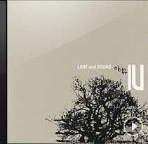
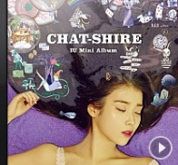
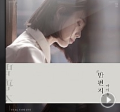
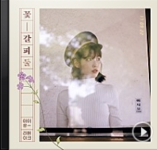

1. 미아
1. 미아

6. 스물셋
6. 스물셋

8. 밤편지
8. 밤편지

9. 가을 아침
9. 가을 아침
이른 아침 작은 새들 노랫소리 들려오면
언제나 그랬듯 아쉽게 잠을 깬다
창문 하나 햇살 가득 눈부시게 비쳐오고
서늘한 냉기에 재채기할까 말까
눈 비비며 빼꼼히 창밖을 내다보니
삼삼오오 아이들은 재잘대며 학교 가고
산책 갔다 오시는 아버지의 양손에는
효과를 알 수 없는 약수가 하나 가득
딸각딸각 아침 짓는 어머니의 분주함과
엉금엉금 냉수 찾는 그 아들의 게으름이
상큼하고 깨끗한 아침의 향기와
구수하게 밥 뜸드는 냄새가 어우러진
가을 아침 내겐 정말 커다란 기쁨이야
가을 아침 내겐 정말 커다란 행복이야
응석만 부렸던 내겐
파란 하늘 바라보며 커다란 숨을 쉬니
드높은 하늘처럼 내 마음 편해지네
텅 빈 하늘 언제 왔나 고추잠자리 하나가
잠 덜 깬 듯 엉성히 돌기만 비잉비잉
토닥토닥 빨래하는 어머니의 분주함과
동기동기 기타 치는 그 아들의 한가함이
심심하면 쳐대는 괘종시계 종소리와
시끄러운 조카들의 울음소리 어우러진
가을 아침 내겐 정말 커다란 기쁨이야
가을 아침 내겐 정말 커다란 행복이야
응석만 부렸던 내겐
가을 아침 내겐 정말 커다란 기쁨이야
가을 아침 내겐 정말 커다란 행복이야
뜬구름 쫓았던 내겐
이른 아침 작은 새들 노랫소리 들려오면
언제나 그랬듯 아쉽게 잠을 깬다
창문 하나 햇살 가득 눈부시게 비쳐오고
서늘한 냉기에 재채기할까 말까